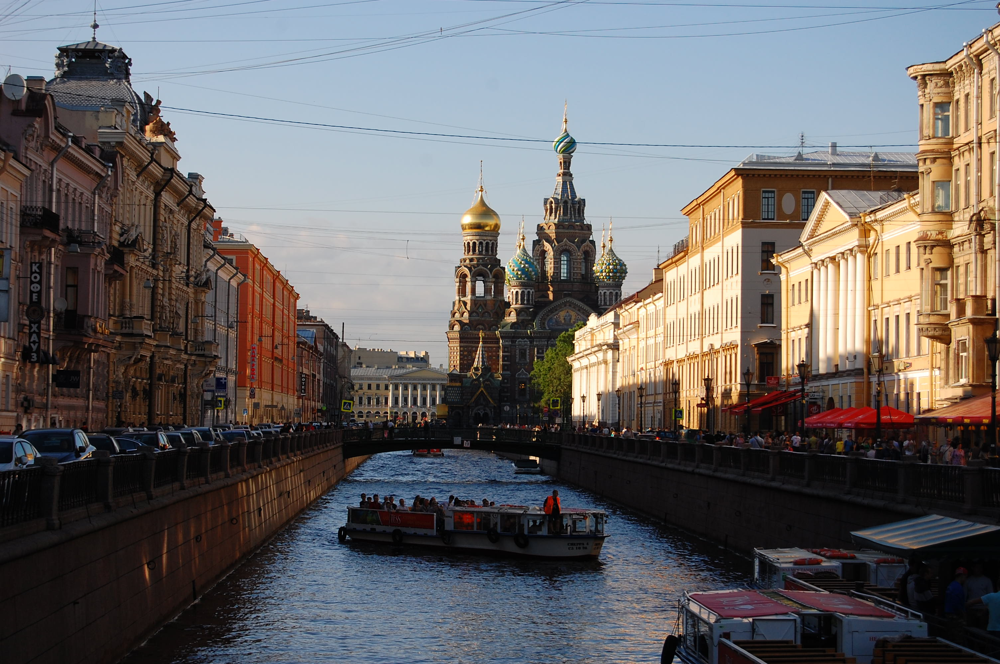
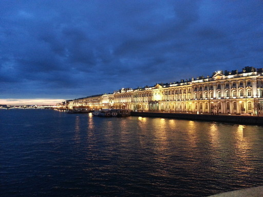
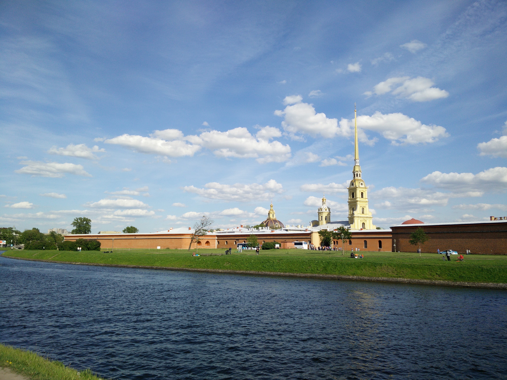
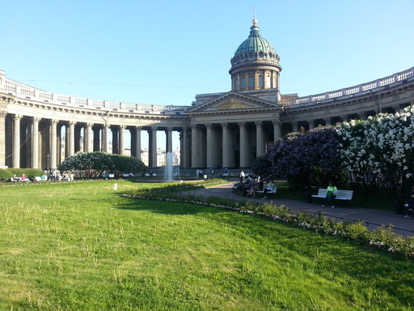
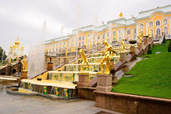
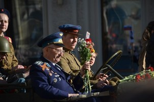

, No 1
A man’s story in fairy tails city
l0.45
Author’s thoughts
From time to time, people intent to connect memories, experiences, smells, thoughts or even feelings they had in specific time within a place they have been. Occasionally, it could be sad or happy emotions, which could conquer our minds over a place, but still, these are the memories and emotions, which resides in us until the end of our lives and we have to learn how to live with those. Once a wise man saying: What matters is not the place but with who you are in that place. Over the years, I have come to realised that it’s a combination of the place and the people that we meet, and curved unique memories into me and the desire to re-visit some places again. For myself this city is Saint-Peterburg, the Venice of the North!
— Stefanos Georgiou
3
What I was doing there?
by Stefanos Georgiou
During my MSc’s degree, I had the unique opportunity to study in four different countries for the last two years. Spending almost five months in France, Finland, Sweden and Russia was, therefore, a life changing and unforgettable experience that I had. Although, the most memorable city I have been, which brings me goose bumps and happy emotions every time I think of it, is Saint Petersburg, the city of czar Peter the Great.
From my age, I have traveled a lot in different places. Nevertheless, when people are asking me: Why Saint Petersburg is your most favorite and lovely place?. The only reply I can give: It doesn’t make always sense why we love something...we just love it. There are various of things and facts, that I can take my time and talk about, which is why most of times it is difficult to express my emotions and thoughts; therefore, the description I’m giving in most case has the following outline: history of the city; sightseeing; night life; city events; city facts; and acknowledgments.
History of the city
Czar Peter the First visited the romantic city of Venice in Italy, as an outcome, an impression of the magnificent architecture and the beauty of this city seeded in his mind. That justifies the reason that the architects of the city were most of them Italians like: Antonio Rinaldi, Giacomo Quarenghi and Carlo Rossi. A Venice of the North was also Peter’s the Great dream, which he decided to locate it in North East of Russia on Neva river at the begging of the Gulf of Finland in the Baltic Sea. The construction initially started on 27th of May year 1703, as an aim to have a beautiful city, a cultural center, that can provide easy access in Europe from Russia. A complex of 101 islands and 342 bridges is constructing as a whole of the glamorous city. Once a formal capital of Russia, Saint Petersburg also went through changes by having different names, as Petrograd till 1924, Leningrad till 1991, and Saint Petersburg with the fall of ussr. People also refer to Saint Petersburg as Russia’s cultural capital, apart of that it is the second largest city in Russia after Moscow.

Our Savior on Spilled Blood Cathedral…
3
Sightseeing
The magic of the city, a fact which makes it gorgeous and attracts a large number of tourists lies in the numerous and unique sightseeing; besides, there are impressive in matters of architecture and size. The majority of the architects, who were French, Italians and Russians, used an “Empire Style” in architecture in order to emerge Saint Petersburg into a cultural capital. In the city center, a specific architectural rule was followed by the constructors in order to keep the original historical view of the city even nowadays. The monuments and sightseeing of the city, the most attractive for the public and tourists, which are purely reminds of Russia are enlisted as: Our Savior on Spilled Blood Cathedral; Hermitage Museum (aka The Winter Palace); Peters and Paul Fortress; Saint Isaac Cathedral; Kazan Cathedral (aka Kanzanski); and Petergof (aka The Summer Palace).
Each time, I think of Saint Petersburg, the first thing which emerged in my mind and I feel a shiver running down my spine, is the unique Cathedral of Our Savior on Spilled Blood. It is one of my favorite sightseeing; it was build in honor of Emperor Alexander the Second near the place where he was critically wounded by a bomb. An alliance between the Ottoman Empire, the United Kingdom, France and Sardinia brought a devastating defeat towards the Russian Empire, during the was fighting for the Orthodox Christians rights in the Crimean War (Oct. 1853 - Feb. 1856). After experiencing the defeat, from the Crimean War, a number of major democratic reforms were issued as universal military conscription, were all social classes requested to serve in the army apart from the peasants. The meaning behind the name “Our Savior on Spilled Blood” was given to Alexander the II as a gratitude for the reforms he issued. This marvelous construction is located in the heart of the city close to Nevsky Prospect (main street), and next to Griboedov Canal. This Orthodox church is decorated with different Saints from the outside and inside. Creators used mosaic as original material, that is why the Cathedral is unique.
It is considered to be one of the world largest and oldest museums. Hermitage, which is also known as the Winter Palace, was the place where the czars used to live during the winter times. The process of construction started in 1754 during the time of Elisabeth. It was build by Rastrelli and designed in Rococo style. The construction is considered to be the most famous building in Saint Petersburg and it locates in Dvortsovaya ploshad which means Palace Square. Visitors can spend numerous of hours admiring unique pieces of art from Russia, France, the Netherlands, Spain, Italy, Greece and Egypt such as paintings, statues, jewelry, weapons, armors and so on.

Hermitage Museum
As the name says, Peter’s and Paul’s fortress it’s a fortress which was founded by Peter the First and located on the shore of Petrogradskaya island. Apart from being a fortress this complex has one of the oldest church in Saint Petersburg, an elegant and smooth bell tower with gold edge roof decorated by angel, also held the final rest place for the Russian czars. Political prisoners were also kept in the fortress, and an execution platform was located in the main square. A unique fact about the fortress is that Peter the Great requested that none of the buildings could be higher that Peter and Paul Cathedral. A sandy beach is located around the fortress towards Neva river and often used by people for picnic and sun tanning during summer times. Also, if you passing by during midday don’t get scared because a cannon is firing that time as a tradition of this city.

Peter’s and Paul’s Fortress
As the largest Orthodox cathedral it provides a city view from the height of 102 meters for the public, is the Saint Isaacs Cathedral. Founded by czar Alexander the First while Auguste de Montferrand (the main architect) spent almost 40 years in order to provide this gorgeous and adorable cathedral. A large golden painted dome in Greek and Byzantium art style decorates the center of Isaac’s Cathedral, also four smaller domes in square form are surrounding the central one. An enormous bronze door could be found in the main entrance and red granite columns with Corinthian foreheads style are placed around the cathedral. Saint Isaacs Cathedral is located close to Adimirteskaya Metro Station, visitor have to pay entrance fee in order to get inside the church and another fee for going to the top near the central dome. During the Second World War, the domes where painted with darker color to avoid being a target for the enemy’s artillery.
Saint Isaac’s cathedral
Kazan Cathedral (Kazanski) is a Orthodox church has an unusual shape which reminds a combination of Italian style for the dome and Greek style for the pillars, with Andrey Voronikhin as the architect. Nowadays a number of liturgies are held in Kazan Cathedral. The location of the cathedral is opposite to Our Savior on Spilled Blood in Nevsky Prospect. By entering the cathedral visitors can experience the unique atmosphere which is provided by the decoration of sculptures, icons and mosaics with many Saints depicted on it. During Christmas and Easter liturgies, the visitors can witness towards the optical and acoustic essence, which is created by the bishops and the chanters, an atmosphere, which should not be missed by anybody who is traveling in Saint Petersburg during this time.

Kazan Cathedral (Kazanski)
Russian Versailles is known to be Petergof, were the nature is ruling and with a combination of palaces, gardens and fountains as a single sequential piece of art used to be the summer palace of the Russian czars. The sight of the fabulous fountains and the golden statues with the luxurious royal estates gives the feeling and essence of the mighty Russian Empire and the way czars used to live and control the country. Each czar used to expand the Summer Palace according their own taste without changing the image of the place. During winter times, the fountains are out of use and the summer palace is closed, usually it is opened during May and summer. Petergof is located outside the city on the shore of Gulf of Finland, thus the Palace could be reached by boats.

Petergof (aka The Summer Palace)
Night Life
All over the day Saint Petersburg is quite a lively and cheerful city, that provides many services and of course great and unforgettable night life. Twenty four hours cafeterias and restaurants can be found all over the city, over daily base even many night clubs, jazz bars, shisha bars, dancing clubs, karaoke clubs, boat parties are going on and many more which consist one of the main instrument of joy not only for the locals but for foreigners too. A lot of these places can be found in and around Nevsky Prospect, Mayakoskaya, Rubishteyna, Chernichevskaya and so on.
One of my favorite Jazz bar is located along side with Griboedova canal just next to Our Savior on Spilled Blood Cathedral going by the name Dom 7. During the whole week Dom 7 provides live jazz music for their customers, in a simple, lively and friendly environment with great customer service, tasty food plates and refreshing beverages. During summer times tables are established outside the bar and customers can enjoy their evening while having a beautiful view next to the cathedral of Our Savior on Spilled Blood.
Freedom is a fabulous time cafe, which is located close to Kazan Cathedral, the name time cafe indicates the fact that customers are paying depending on the time they spend inside the cafe but not on the snacks or beverages like coffees and teas they are consuming. The charge is 2 rubles per minute and the minimum time bill can be 90 rubles even if a customer stays less than 45 minutes. Beautiful staircase which is decorated with pillars on the sides can be found after entering the timecafe entrance, a variety of different rooms are located inside the cafe and each one has a different decoration and characteristics. Rooms can also be rented and used for meetings or celebrations, some rooms provide gaming platforms and board games for their customers.
Akakao bar is a night club located close to Griboedov Chanel Embankment and has two main rooms with different kind of music. One for slow pace music and the other one a fast pace music, electro and other kinds which youngsters like to listen. The decoration is an medieval style and at some parts reminds horror movies scene, fancy lights and effects is the main indigence which makes the youth feel crazy and wild. Customers of this night club usually are adults and the club stays open until morning hours. For the entrance usually a special item or clothing is required to enter for free, like a lighter or a specific kind of cloth which is announced in the main website.
Shisha bar chains can be found all over the city, although one of my favorite is “Unikalnyie kalyannyie” (Unique shisha bar) which can be found in Mayakovskaya street. Some of them are hidden in specific underground places, which only some locals knows about, and reservation is required. Some of those shisha bars provide board and console games for their customers, while smoking you can also make different conversation with the people are since most of the time are really friendly and open towards foreigners. Many times, you can lost your time awareness and stay all night talking with the friendly waiters, singing and drinking until morning hours. There is no specific price for the shisha and the service, the customer usually can leave the amount of money they feel like depending on the quality of the shisha and the customer service.

Cafeteria near Kazan
City Events
The city day is one of the biggest celebrations in Saint Petersburg, which takes place on 27th of May. There are a lot of public concerts, parades and impressive fireworks all around the city during the day and night. Many event are also held in Palace Square just in front of Hermitage until late night, also many events can be found in Nevsky Prospect around Kazan and Our Savior on Spilled Blood Cathedrals.
The Victory day is celebrated on 9th of May. It is a historical day not only for Russia, but for the whole world. 9th of May in 1945 is the day of the capitulation of Nazi Germany to the Soviet Union. During the Second World War the Nazi troops did not invade the city but instead they captured all the surrounding cities and villages in order to siege Leningrad (as the city name was before 1991), and let the people starve to death. It was 900 days of horror. Till now, some people still remember those days of harshness and brutality which has been carved in minds forever, but the strong morals of freedom and love towards their country lead the Soviet forces towards the Victory Day. Great military parades are going on in the morning hours starting from the Palace Square which continues through Nevsky Prospect. Upon sight of the old war veterans that are parading, the warriors of freedom, those who were ready to sacrifice everything for their country and the greater good bring chills to the crowd and make us wander if we could ever be like them, to fight for something bigger than ourselves. A final event of the day is magnificent firework as a respect to those people who gave their lives for the city and its freedom. A great view can be observed from roofs and Birzhevaya Square.

The Victory Day
The most well known celebration day that take place during the White Nights is the Scarlet Sails Festival with music concerts, water shows and fireworks. It is a celebration of the end of the school. Frigates are changing their sails to red, this fact emerge from the famous Russian novel written by Alexander Green and speaks about a young lady Assol who was waiting for a guy coming with the Scarlett Sails. During this time a number of students are walking on the streets and drinking until late night in order to enjoy and celebrate their graduation.

The Scarlet Sails
City Facts
Although Saint Petersburg is a quite touristic city, there are not many locals that are confident with the English language but most of them are more than ready and willing to help foreigners. People in Saint Petersburg are always friendly and open for any conversation with tourists or locals, but the love and consumption of alcohol makes them even more friendly and joyful during party days. Since it is a country, which has many beautiful women you can see a lot of men buying bouquets of flowers for their loved once, many of the flower shops are 24/7 and you can always find flower shops next to each metro.
During the summer times when the ice inside Neva river is melted cargo ships are scheduled on night times. Since the bridge are low they have to rise so the cargo ships can pass. If you end up on the wrong side of the island, you have to wait till morning hours when the bridges are lowering or party time morning. The best way to learn about different and unique places are though locals. My thesis advisor Prof. Andrey Shevel quite famous in his field of research is a simple person who used to guide me about the city, showing places which serve the best quality of food, sweets and coffees. For me it was an amazing experience hanging out with my advisor talking about different subjects like politics, economy, history and many more that a lot of other professors would not do in other countries. This city shown me the simplicity of the people and the magnificent variety of exploration and interest they have about new things. Also, once my advisor said It’s a sunny day, you have to go out because you never know have such a change again. Apart from my advisor many friends that I meet in the city used to call me whenever they were around, just to have a walk in the city enjoy, drink a coffee and have a simple conversation. Finally, I can say Saint Petersburg is one of the most unique cities I have ever been, that combines both aspects of culture and great night life together an it’s a perfect choice for visitors and tourists.
This place makes me nostalgic indeed, I would like to spent more lovely moments in this beautiful city anytime in my life again and again. Being away from Saint-Petersburg it feels like something is missing from myself, a part of me is still somewhere there, staring the monuments, walking in the empty streets, but, never alone, always with my thoughts.
“
This place makes me nostalgic indeed, I would like to spent more lovely moments in this beautiful city anytime in my life again and again. Being away from Saint-Petersburg it feels like something is missing from myself, a part of me is still somewhere there, staring the monuments, walking in the empty streets, but, never alone, always with my thoughts.
Acknowledgments
would like to thank all of my friends and the peoples, who made my life enjoyable and memorable in this city. Some names are worth to mention- Marat, Nenad, Theodoros, Alexander, George, Olesya, Anya, Alexai, Katya, Catherine, Ivan, Nina, Ksenia, Alyona, Andrey, Oleg, Vladimir, Boris, Nina, and Tom.
Alexandra Klimova and Olga Rybnytska, special thanks goes to you because of your wonderful picture and cooperation during my staying in Saint Petersburg. Thanks you Ornela for sharing your snapshots with me.